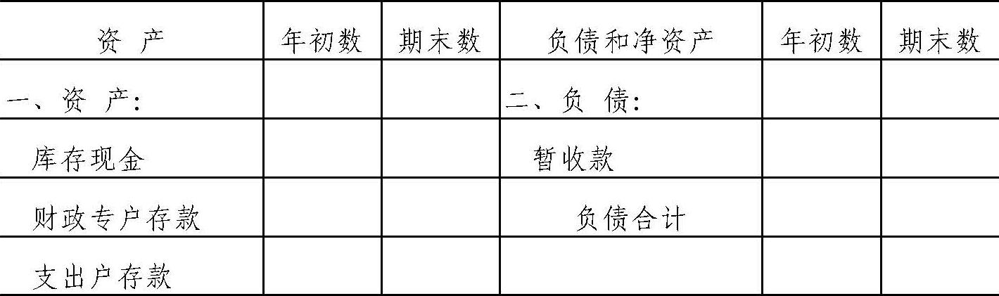
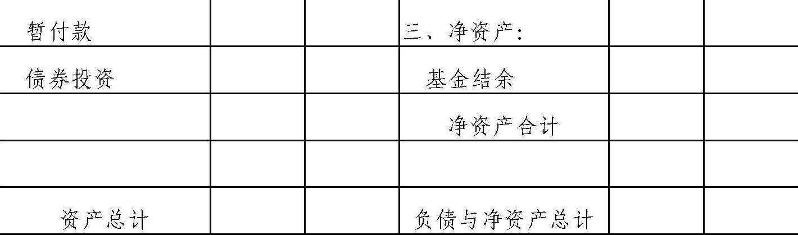
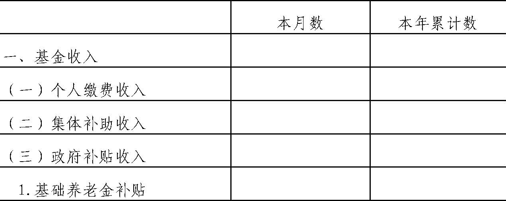
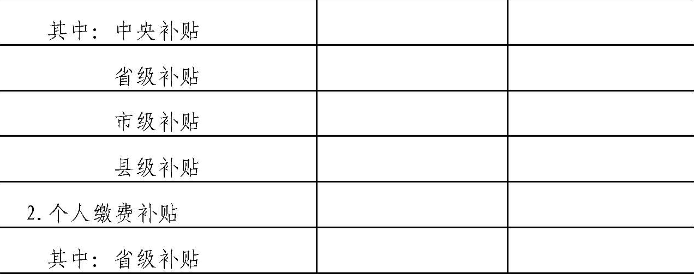
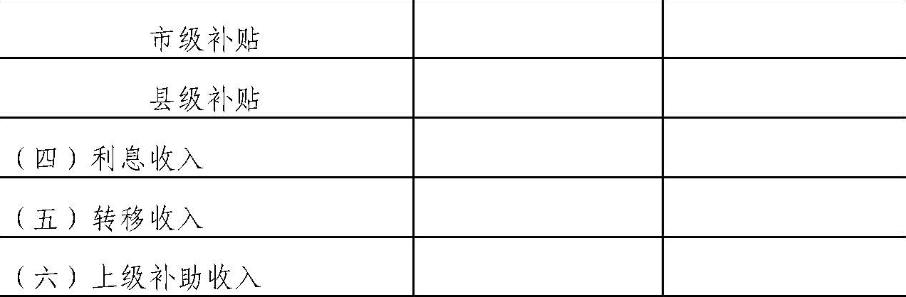
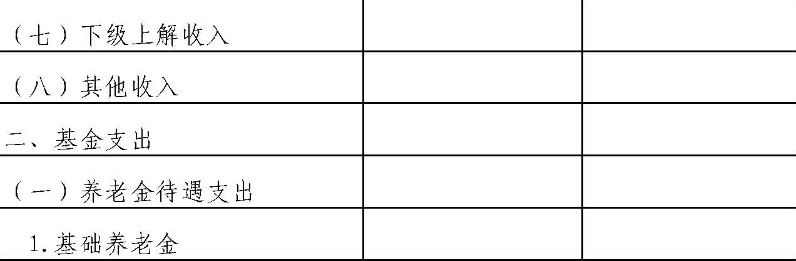
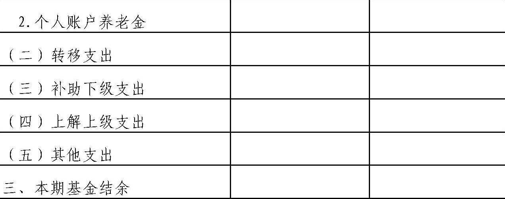

财政部
关于印发《新型农村社会养老保险基金会计核算暂行办法》的通知
财会〔2011〕3号
【依据《关于印发〈社会保险基金会计制度〉的通知》（财会〔2017〕28号）于2018.01.01废止；依据《关于公布废止和失效的财政规章和规范性文件目录（第十三批）的决定》（财政部令第103号）于2020.01.23废止】
各省、自治区、直辖市财政厅（局）：
为适应新型农村社会养老保险试点工作的需要，规范新型农村社会养老保险基金的会计核算，根据《中华人民共和国会计法》、《国务院关于开展新型农村社会养老保险试点工作的指导意见》（国发〔2009〕32号）、《新型农村社会养老保险基金财务管理暂行办法》（财社〔2011〕16号）以及有关法律法规的规定，我部制定了《新型农村社会养老保险基金会计核算暂行办法》，现印发给你们，请遵照执行。执行中有何问题，请及时反馈我部。
附件：新型农村社会养老保险基金会计核算暂行办法
财政部
2011年3月9日
附件：
新型农村社会养老保险基金会计核算暂行办法
第一章 总则
第一条 为规范新型农村社会养老保险（以下简称新农保）基金的会计核算，根据《中华人民共和国会计法》、《国务院关于开展新型农村社会养老保险试点工作的指导意见》（国发〔2009〕32号）、《新型农村社会养老保险基金财务管理暂行办法》（财社〔2011〕16号）以及有关法律法规的规定，制定本办法。
第二条 本办法适用于新农保经办机构（以下简称经办机构）经办的新农保基金。
本办法所称新农保基金，是指通过参保农村居民个人缴费、集体补助、政府补贴等渠道筹集的，用于支付符合领取条件的农村居民养老金待遇等支出的专项资金。
第三条 新农保基金应当作为独立的会计主体进行确认、计量和披露。新农保基金独立于经办机构的固有财产及其管理的其他财产，实行专款专用。
第四条 新农保基金的会计核算应当划分会计期间，分期结算账目和编制财务报表。会计期间的起讫日期采用公历日期。
第五条 新农保基金的会计核算采用收付实现制。新农保基金的会计要素包括资产、负债、净资产、收入和支出。
第六条 新农保基金的会计记账采用借贷记账法。
第七条 新农保基金的会计核算应当遵循以下基本原则：
（一）新农保基金的会计核算应当以实际发生的业务为依据，如实反映新农保基金的财务状况和收支情况等信息，保证会计信息真实可靠、内容完整。
（二）新农保基金的会计核算应当采用规定的会计政策，确保会计信息口径一致、相互可比。
（三）新农保基金的会计核算应当及时进行，不得提前或者延后。
第八条 新农保基金的会计凭证填制、会计账簿登记、会计档案
管理以及内部会计监督与控制等相关会计基础工作，应当遵循《会计基础工作规范》、《会计档案管理办法》等有关规定。
第二章 会计科目及使用说明
第九条 经办机构应当按照本办法的规定设置和使用会计科目、编制会计凭证、登记会计账簿，对新农保基金进行会计核算。在不违反本办法的前提下，经办机构可以根据核算和管理工作需要对明细科目的设置作必要的补充。
本办法统一规定会计科目的编号，以便于编制会计凭证、登记账簿、查阅账目，实行会计信息化管理，不得随意打乱重编。
经办机构在编制会计凭证、登记会计账簿时，应当填列会计科目的名称，或者同时填列会计科目的名称和编号，不得只填列科目编号、不填列科目名称。
第十条 会计科目名称和编号
第十一条 会计科目使用说明
1001 库存现金
一、本科目核算新农保基金的库存现金。
二、经办机构应当严格按照国家有关现金管理的规定收支现金。
三、库存现金的主要账务处理如下：
（一）收到现金，按照实际收到的金额，借记本科目，贷记“个人缴费收入”等科目。
将现金存入银行，按照实际存入的金额，借记“收入户存款”等科目，贷记本科目。
（二）从银行提取现金，按照实际提取的金额，借记本科目，贷记“支出户存款”科目。
支出现金，按照实际支出的金额，借记“养老金待遇支出”等科目，贷记本科目。
四、本科目应当设置“现金日记账”，根据收付款凭证，按照业务发生顺序逐笔登记；每日终了，应当计算当日的现金收入合计数、现金支出合计数和结余数，并将结余数与实际库存数进行核对，做到账款相符。
五、本科目期末借方余额，反映新农保基金的库存现金。
1002 收入户存款
一、本科目核算新农保基金按规定存入收入户的款项。
二、经办机构应当严格按照新农保基金有关财务管理规定办理收入户相关业务。
收入户主要用于暂存个人缴费收入、集体补助收入、转移收入、上级补助收入、下级上解收入、该账户的利息收入以及其他收入等。收入户除向财政专户划转收入外，不得发生其他支付业务。
三、收入户存款的主要账务处理如下：
（一）收到现金形式的个人缴费收入、集体补助收入，按照实际收到的金额，借记“库存现金”科目，贷记“个人缴费收入”、“集体补助收入”科目。将现金形式的上述收入存入收入户，按照实际存入的金额，借记本科目，贷记“库存现金”科目。
收到直接存入银行或银行转账形式的个人缴费收入、集体补助收入，按照实际收到的金额，借记本科目，贷记“个人缴费收入”、“集体补助收入”科目。
（二）收到参保对象跨统筹地区流动而划入的基金收入，按照实际收到的金额，借记本科目，贷记“转移收入”科目。
（三）收到上级补助收入、下级上解收入，按照实际收到的金额，借记本科目，贷记“上级补助收入”、“下级上解收入”科目。
（四）收到收入户存款利息，按照实际收到的利息金额，借记本科目，贷记“利息收入”科目。
（五）收到现金形式的社会组织和个人捐赠等其他收入，按照实际收到的金额，借记“库存现金”科目，贷记“其他收入”科目。将现金形式的上述收入存入收入户，按照实际存入的金额，借记本科目，贷记“库存现金”科目。
收到直接存入银行或银行转账形式的社会组织和个人捐赠等其他收入，按照实际收到的金额，借记本科目，贷记“其他收入”科目。
（六）按规定将收入户存款划入财政专户，按照实际划转的金额，借记“财政专户存款”科目，贷记本科目。
四、本科目应当按照开户银行设置“收入户存款日记账”，根据收付款凭证，按照业务发生顺序逐笔登记；每日终了，应当结出余额。“收入户存款日记账”应当定期与“银行对账单”核对，至少每月核对一次。月度终了，收入户存款账面余额与银行对账单余额之间如有差额，必须逐笔查明原因进行处理，并按月编制“银行收入户存款余额调节表”，调节相符。
五、收入户存款应当按规定定期缴存财政专户。缴存财政专户后，本科目月末无余额。
1003 财政专户存款
一、本科目核算新农保基金按规定存入财政专户的款项。
二、经办机构应当严格按照新农保基金有关财务管理规定办理财政专户相关业务。
财政专户主要用于接收征收机构转入的基金收入；接收基金购买国家债券兑付的本息收入、该账户资金形成的利息收入以及支出户转入的利息收入等；根据经审定的用款申请，向支出户划拨基金；进行定期存款；购买国家债券；向上级或下级财政专户划拨基金。
三、财政专户存款的主要账务处理如下：
（一）按规定将收入户存款划入财政专户，按照实际划入的金额，借记本科目，贷记“收入户存款”科目。
（二）收到政府补贴收入，按照实际收到的金额，借记本科目，贷记“政府补贴收入”科目。
（三）收到财政专户存款利息，按照实际收到的利息金额，借记本科目，贷记“利息收入”科目。
（四）按规定购买国家债券，按照实际支付的金额，借记“债券投资”科目，贷记本科目。
收到国家债券利息，按照实际收到的利息金额，借记本科目，贷记“利息收入”科目；到期收回国家债券本金，按照实际收回的本金金额，借记本科目，贷记“债券投资”科目。
（五）根据经审定的用款申请，从财政专户向支出户划拨基金，按照实际划拨的金额，借记“支出户存款”科目，贷记本科目。
（六）按规定将支出户存款利息收入划拨到财政专户，按照实际划拨的金额，借记本科目，贷记“支出户存款”科目。
（七）发生基金上缴业务。
1.向上级上缴基金的，按规定将基金从本级财政专户划入本级支出户，按照实际划入的金额，借记“支出户存款”科目，贷记本科目；将基金从本级支出户上缴上级收入户，按照实际上缴的金额，借记“上解上级支出”科目，贷记“支出户存款”科目。
2.收取下级上缴基金的，按规定收到下级支出户上缴本级收入户的基金，按照实际收到的金额，借记“收入户存款”科目，贷记“下级上解收入”科目；将基金从本级收入户划入本级财政专户，按照实际划入的金额，借记本科目，贷记“收入户存款”科目。
（八）发生基金下拨业务。
1.收到上级下拨基金的，按规定收到上级支出户下拨本级收入户的基金，按照实际收到的金额，借记“收入户存款”科目，贷记“上级补助收入”科目；将基金从本级收入户划入本级财政专户，按照实际划入的金额，借记本科目，贷记“收入户存款”科目。
2.向下级下拨基金的，按规定将基金从本级财政专户划入本级支出户，按照实际划入的金额，借记“支出户存款”科目，贷记本科目；将基金从本级支出户下拨下级收入户，按照实际下拨的金额，借记“补助下级支出”科目，贷记“支出户存款”科目。
四、本科目应当按照开户银行设置“财政专户存款日记账”，根据财政部门转来的财政专户缴拨凭证和加盖专用印章的原始凭证复印件，按照业务发生顺序逐笔登记；每日终了，应当结出余额。“财政专户存款日记账”应当定期与财政部门核对，至少每月核对一次。月度终了，财政专户存款账面余额与财政部门对账单余额之间如有差额，必须逐笔查明原因进行处理，并按月编制“财政专户存款余额调节表”，调节相符。
五、经办机构可以根据实际情况设置“活期存款”、“定期存款”辅助账，分别登记财政专户活期存款、定期存款的期初余额、当期增加额、当期减少额以及期末余额。
六、本科目期末借方余额，反映财政专户存款余额。
1004 支出户存款
一、本科目核算新农保基金按规定存入支出户的款项。
二、经办机构应当严格按照新农保基金有关财务管理规定办理支出户相关业务。
支出户主要用于接收财政专户拨入的基金；支付基金支出款项；暂存该账户的利息收入；划拨该账户资金利息收入到财政专户。支出户除接收财政专户拨付的基金和该账户的利息收入外，不得发生其他收入业务。
三、支出户存款的主要账务处理如下：
（一）接收财政专户拨入的基金，按照实际转入的金额，借记本科目，贷记“财政专户存款”科目。
（二）收到支出户存款利息，按照实际收到的利息金额，借记本科目，贷记“利息收入”科目。
划拨支出户利息到财政专户，按照实际划拨的利息金额，借记“财政专户存款”科目，贷记本科目。
（三）按规定支付参保人养老保险待遇支出，按照实际支付的金额，借记“养老金待遇支出”科目，贷记本科目。
（四）支付因参保人跨统筹地区流动而转出的基金支出，按照实际转出的金额，借记“转移支出”科目，贷记本科目。
（五）发生上解上级支出、补助下级支出，按照实际转出的金额，借记“上解上级支出”、“补助下级支出”科目，贷记本科目。
（六）发生经财政部门核准开支的其他支出，按照实际支付的金额，借记“其他支出”科目，贷记本科目。
四、本科目应当按开户银行设置“支出户存款日记账”，根据收付款凭证，按照业务发生顺序逐笔登记；每日终了，应当结出余额。“支出户存款日记账”应当定期与“银行对账单”核对，至少每月核对一次。月度终了，支出户存款账面余额与银行对账单余额之间如有差额，必须逐笔查明原因进行处理，并按月编制“银行支出户存款余额调节表”，调节相符。
五、本科目期末借方余额，反映支出户存款余额。
1101 暂付款
一、本科目核算新农保基金业务活动中形成的各种暂付款项。
二、本科目应当按照暂付款种类和对方单位或个人进行明细核算。
三、暂付款的主要账务处理如下：
（一）发生暂付款项，按照实际支付的金额，借记本科目，贷记“库存现金”等科目。
（二）暂付款项应当定期清理，及时结清。收回暂付款项，按照实际收回的金额，借记“库存现金”等科目，贷记本科目。
四、本科目期末借方余额，反映尚未结清的暂付款项。
1201 债券投资
一、本科目核算按规定用新农保基金购入的国家债券。
二、本科目应当按照国家债券的种类设置明细账，进行明细核算。
三、债券投资的主要账务处理如下：
（一）按规定购买国家债券，按照实际支付的金额，借记本科目，贷记“财政专户存款”科目。
（二）收到国家债券利息，按照实际收到的利息金额，借记“财政专户存款”科目，贷记“利息收入”科目；到期收回国家债券本金，按照实际收回的本金金额，借记“财政专户存款”科目，贷记本科目。
四、本科目期末借方余额，反映新农保基金持有的国家债券成本。
2001 暂收款
一、本科目核算新农保基金业务活动中形成的各种暂收款项。
二、本科目应当按照暂收款的种类和对方单位或个人进行明细核算。
三、暂收款的主要账务处理如下：
（一）发生暂收款项，按照实际收到的金额，借记“库存现金”等科目，贷记本科目。
（二）暂收款项应当定期清理，及时偿付。因债权人等特殊原因确实无法偿付的，经财政部门批准后作为基金的其他收入。
偿付或结清暂收款项，按照实际偿付或结清的金额，借记本科目，贷记“库存现金”等科目。确实无法偿付的暂收款项经批准转作其他收入，借记本科目，贷记“其他收入”科目。
四、本科目期末贷方余额，反映尚未偿付或结清的暂收款项。
3001 基金结余
一、本科目核算新农保基金全部收入扣除全部支出后的滚存结余。
二、基金结余的主要账务处理如下：
（一）期末，将各收入科目贷方余额转入本科目，借记“个人缴费收入”、“集体补助收入”、“政府补贴收入”、“利息收入”、“转移收入”、“上级补助收入”、“下级上解收入”、“其他收入”科目，贷记本科目。
（二）期末，将各支出科目借方余额转入本科目，借记本科目，贷记“养老金待遇支出”、“转移支出”、“补助下级支出”、“上解上级支出”、“其他支出”科目。
三、本科目期末贷方余额，反映历年积存的新农保基金结余。
4001 个人缴费收入
一、本科目核算参保农村居民按照规定的标准缴纳的新农保养老保险费收入。
二、个人缴费收入的主要账务处理如下：
（一）收到参保农村居民个人缴费，按照实际收到的金额，借记“收入户存款”等科目，贷记本科目。
（二）期末，将本科目贷方余额转入基金结余。按照本科目期末贷方余额，借记本科目，贷记“基金结余”科目。
三、期末结转后，本科目应无余额。
4002 集体补助收入
一、本科目核算乡（镇）、村等集体经济组织对参保农村居民个人缴费给予的补助收入，以及其他经济组织、社会公益组织、个人为参保人缴费提供的资助收入。
二、集体补助收入的主要账务处理如下：
（一）收到集体补助或其他组织和个人资助资金，按照实际收到的金额，借记“收入户存款”等科目，贷记本科目。
（二）期末，将本科目贷方余额转入基金结余。按照本科目期末贷方余额，借记本科目，贷记“基金结余”科目。
三、期末结转后，本科目应无余额。
4003 政府补贴收入
一、本科目核算财政给予新农保基金的补贴收入。
二、本科目下按照“基础养老金补贴”、“个人缴费补贴”设置一级明细科目，并在一级明细科目下按照补贴资金来源设置“中央补贴”、“省级补贴”、“市级补贴”、“县级补贴”等二级明细科目，进行明细核算。
其中：“基础养老金补贴”一级明细科目，核算各级财政因按规定标准补助符合待遇领取条件参保人新农保基础养老金而给予基金的补贴收入。
“个人缴费补贴”一级明细科目，核算地方财政因按规定标准补助参保人个人缴费而给予基金的补贴收入。
三、政府补贴收入的主要账务处理如下：
（一）收到政府对基础养老金的补贴资金，按照实际收到的金额，借记“财政专户存款”科目，贷记本科目（基础养老金补贴）。
收到政府对个人缴费的补贴资金，按照实际收到的金额，借记“财政专户存款”科目，贷记本科目（个人缴费补贴）。
（二）期末，将本科目贷方余额转入基金结余。按照本科目期末贷方余额，借记本科目，贷记“基金结余”科目。
四、经办机构可以根据实际情况设置“困难群体代缴补贴”辅助账，登记地方政府为农村重度残疾人等缴费困难群体代缴的部分或全部最低标准的养老保险费。
五、期末结转后，本科目应无余额。
4004 利息收入
一、本科目核算用新农保基金购买国家债券、存入商业银行等存款类金融机构所取得的利息收入。
二、利息收入的主要账务处理如下：
（一）收到收入户存款利息，按照实际收到的利息金额，借记“收入户存款”科目，贷记本科目。
（二）收到财政专户存款利息，按照实际收到的利息金额，借记“财政专户存款”科目，贷记本科目。
（三）收到国家债券利息，按照实际收到的利息金额，借记“财政专户存款”科目，贷记本科目。
（四）收到支出户存款利息，按照实际收到的利息金额，借记“支出户存款”科目，贷记本科目。
（五）期末，将本科目贷方余额转入基金结余。借记本科目，贷记“基金结余”科目。
三、期末结转后，本科目应无余额。
4101 转移收入
一、本科目核算因参保对象跨统筹地区流动而划入的基金收入。
二、转移收入的主要账务处理如下：
（一）收到因参保对象跨统筹地区流动而划入的基金收入，按照实际收到的金额，借记“收入户存款”科目，贷记本科目。
（二）期末，将本科目贷方余额转入基金结余。按照本科目期末贷方余额，借记本科目，贷记“基金结余”科目。
三、期末结转后，本科目应无余额。
4201 上级补助收入
一、本科目核算本级经办机构接收上级经办机构拨付的补助收入。
二、上级补助收入的主要账务处理如下：
（一）收到上级经办机构拨付的补助款项，按照实际收到的金额，借记“收入户存款”科目，贷记本科目。
（二）期末，将本科目贷方余额转入基金结余。按照本科目期末贷方余额，借记本科目，贷记“基金结余”科目。
三、期末结转后，本科目应无余额。
4202 下级上解收入
一、本科目核算本级经办机构接收下级经办机构上解的基金收入。
二、下级上解收入的主要账务处理如下：
（一）收到下级经办机构上解的基金款项，按照实际收到的金额，借记“收入户存款”科目，贷记本科目。
（二）期末，将本科目贷方余额转入基金结余。按照本科目期末贷方余额，借记本科目，贷记“基金结余”科目。
三、期末结转后，本科目应无余额。
4301 其他收入
一、本科目核算社会组织和个人对新农保基金的捐赠以及其他经财政部门核准的基金收入。
二、其他收入的主要账务处理如下：
（一）收到社会组织和个人捐赠等其他收入，按照实际收到的金额，借记“收入户存款”等科目，贷记本科目。
（二）期末，将本科目贷方余额转入基金结余。按照本科目期末贷方余额，借记本科目，贷记“基金结余”科目。
三、期末结转后，本科目应无余额。
5001 养老金待遇支出
一、本科目核算按规定支付给参保农村居民的养老保险待遇支出。
二、本科目下按照“基础养老金”、“个人账户养老金”设置一级明细科目，进行明细核算。
其中：“基础养老金”一级明细科目，核算按政府规定计发标准，并由各级财政为符合待遇领取条件的参保农村居民全额予以补助的养老金待遇。
“个人账户养老金”一级明细科目，核算参保农村居民达到养老保险待遇领取条件时，按照其个人账户全部储存额除以计发月数计算，支付给参保农村居民的养老金待遇，以及参保人死亡时一次性支付其合法继承人除政府补贴外的个人账户资金余额。
三、养老金待遇支出的主要账务处理如下：
（一）按规定定期结算养老金待遇支出，按照实际支付的金额，借记本科目，贷记“支出户存款”等科目。
（二）期末，将本科目借方余额转入基金结余。按照本科目期末借方余额，借记“基金结余”科目，贷记本科目。
四、期末结转后，本科目应无余额。
5101 转移支出
一、本科目核算因参保农村居民跨统筹地区流动而转出的基金支出。
二、转移支出的主要账务处理如下：
（一）发生因参保农村居民跨统筹地区流动而转出的基金支出，按照实际转出的金额，借记本科目，贷记“支出户存款”科目。
（二）期末，将本科目借方余额转入基金结余。按照本科目期末借方余额，借记“基金结余”科目，贷记本科目。
三、期末结转后，本科目应无余额。
5201 补助下级支出
一、本科目核算本级经办机构拨付给下级经办机构的补助支出。
二、补助下级支出的主要账务处理如下：
（一）向下级经办机构拨付补助支出，按照实际支付的金额，借记本科目，贷记“支出户存款”科目。
（二）期末，将本科目借方余额转入基金结余。按照本科目期末借方余额，借记“基金结余”科目，贷记本科目。
三、期末结转后，本科目应无余额。
5202 上解上级支出
一、本科目核算本级经办机构上解上级经办机构的支出。
二、上解上级支出的主要账务处理如下：
（一）向上级经办机构上解支出，按照实际支付的金额，借记本科目，贷记“支出户存款”科目。
（二）期末，将本科目借方余额转入基金结余。按照本科目期末借方余额，借记“基金结余”科目，贷记本科目。
三、期末结转后，本科目应无余额。
5301 其他支出
一、本科目核算经财政部门核准开支的其他支出。
二、其他支出的主要账务处理如下：
（一）发生其他支出，按照实际支付的金额，借记本科目，贷记“支出户存款”等科目。
（二）期末，将本科目借方余额转入基金结余。按照本科目期末借方余额，借记“基金结余”科目，贷记本科目。
三、期末结转后，本科目应无余额。
第三章 财务报表及编制说明
第十二条 经办机构应当按照本办法的规定，编制新农保基金财务报表。
新农保基金财务报表包括资产负债表、收支表及附注。
新农保基金财务报表应当至少分为月度财务报表、年度财务报表，应当根据登记完整、核对无误的账簿记录和其他有关资料编制，做到数字真实、计算准确、手续完备、内容完整、编报及时。
第十三条 财务报表格式
资产负债表
| 编制单位： | ＿＿＿＿年＿＿月＿＿日 | 会农保01表
单位：元 |
|


|
收支表
| 编制单位： | ＿＿＿＿年＿＿月 | 会农保02表
单位：元 |
|





|
第十四条 资产负债表编制说明
（一）本表反映某一会计期末（月末、年末）新农保基金全部资产、负债及净资产的构成情况。
（二）本表“年初数”栏各项目，应当根据上年度本表“期末数”栏各相应项目数字填列。
（三）本表“期末数”栏各项目，其内容和填列方法如下：
1.“库存现金”项目，反映库存现金余额。本项目应当根据“库存现金”科目期末借方余额填列。
2.“财政专户存款”项目，反映财政专户存款余额。本项目应当根据“财政专户存款”科目期末借方余额填列。
3.“支出户存款”项目，反映支出户存款余额。本项目应当根据“支出户存款”科目期末借方余额填列。
4.“暂付款”项目，反映尚未结清的暂付款项。本项目应当根据“暂付款”科目期末借方余额填列。
5.“债券投资”项目，反映新农保基金持有的国家债券成本。本项目应当根据“债券投资”科目期末借方余额填列。
6.“暂收款”项目，反映尚未偿付或结清的暂收款项。本项目应当根据“暂收款”科目期末贷方余额填列。
7.“基金结余”项目，反映截至本期末历年积存的新农保基金结余。本项目应当根据“基金结余”科目期末贷方余额填列。
第十五条 收支表编制说明
（一）本表反映某一会计期间（月度、年度）新农保基金所有收入、支出以及结余情况。
（二）本表“本月数”栏反映各项目的本月实际发生数，其内容和填列方法如下：
1.“基金收入”项目，反映本月基金收入总额。本项目应当根据本表“个人缴费收入”、“集体补助收入”、“政府补贴收入”、“利息收入”、“转移收入”、“上级补助收入”、“下级上解收入”、“其他收入”项目金额加总计算填列。
2.“个人缴费收入”项目，反映本月参保农村居民按照规定的标准缴纳的新农保养老保险费收入。本项目应当根据“个人缴费收入”科目本月贷方发生额填列。
3.“集体补助收入”项目，反映本月乡（镇）、村等集体经济组织对参保农村居民个人缴费给予的补助收入，以及其他经济组织、社会公益组织、个人为参保人缴费提供的资助收入。本项目应当根据“集体补助收入”科目本月贷方发生额填列。
4.“政府补贴收入”项目，反映本月财政给予新农保基金的补贴收入。本项目应当根据“政府补贴收入”科目本月贷方发生额填列。
（1）“基础养老金补贴”项目，反映本月各级财政因按规定标准补助符合待遇领取条件参保人新农保基础养老金而给予基金的补贴收入。本项目应当根据“政府补贴收入——基础养老金补贴”一级明细科目本月贷方发生额填列。
其中：“中央补贴”、“省级补贴”、“市级补贴”、“县级补贴”各明细项目，反映本月不同资金来源的基础养老金补贴，应当分别根据“政府补贴收入——基础养老金补贴”一级明细科目下“中央补贴”、“省级补贴”、“市级补贴”、“县级补贴”等二级明细科目本月贷方发生额填列。
（2）“个人缴费补贴”项目，反映本月地方财政因按规定标准补助参保人个人缴费而给予基金的补贴收入。本项目应当根据“政府补贴收入——个人缴费补贴”一级明细科目本月贷方发生额填列。
其中：“省级补贴”、“市级补贴”、“县级补贴”各明细项目，反映本月不同资金来源的个人缴费补贴，应当分别根据“政府补贴收入——个人缴费补贴”一级明细科目下“省级补贴”、“市级补贴”、“县级补贴”等二级明细科目本月贷方发生额填列。
5.“利息收入”项目，反映本月用新农保基金购买国家债券、存入商业银行等存款类金融机构所取得的利息收入。本项目应当根据“利息收入”科目本月贷方发生额填列。
6.“转移收入”项目，反映本月因参保对象跨统筹地区流动而划入的基金收入。本项目应当根据“转移收入”科目本月贷方发生额填列。
7.“上级补助收入”项目，反映本月本级经办机构接收上级经办机构拨付的补助收入。本项目应当根据“上级补助收入”科目本月贷方发生额填列。
8.“下级上解收入”项目，反映本月本级经办机构接收下级经办机构上解的基金收入。本项目应当根据“下级上解收入”科目本月贷方发生额填列。
9.“其他收入”项目，反映本月社会组织和个人对新农保基金的捐赠以及其他经财政部门核准的基金收入。本项目应当根据“其他收入”科目本月贷方发生额填列。
10．“基金支出”项目，反映本月基金支出总额。本项目应当根据本表“养老金待遇支出”、“转移支出”、“补助下级支出”、“上解上级支出”、“其他支出”项目金额加总计算填列。
11.“养老金待遇支出”项目，反映本月按规定支付给参保农村居民的养老保险待遇支出。本项目应当根据“养老金待遇支出”科目本月借方发生额填列。
（1）“基础养老金”项目，反映本月按政府规定计发标准，并由各级财政为符合待遇领取条件的参保农村居民全额予以补助的养老金待遇。本项目应当根据“养老金待遇支出——基础养老金”一级明细科目本月借方发生额填列。
（2）“个人账户养老金”项目，反映本月参保农村居民达到养老保险待遇领取条件时，按照其个人账户全部储存额除以计发月数计算，支付给参保农村居民的养老金待遇，以及参保人死亡时一次性支付其合法继承人除政府补贴外的个人账户资金余额。本项目应当根据“养老金待遇支出——个人账户养老金”一级明细科目本月借方发生额填列。
12.“转移支出”项目，反映本月因参保农村居民跨统筹地区流动而转出的基金支出。本项目应当根据“转移支出”科目本月借方发生额填列。
13.“补助下级支出”项目，反映本月本级经办机构拨付给下级经办机构的补助支出。本项目应当根据“补助下级支出”科目本月借方发生额填列。
14.“上解上级支出”项目，反映本月本级经办机构上解上级经办机构的支出。本项目应当根据“上解上级支出”科目本月借方发生额填列。
15.“其他支出”项目，反映本月经财政部门核准开支的其他支出。本项目应当根据“其他支出”科目本月借方发生额填列。
16.“本期基金结余”项目，反映本月基金总收入扣除总支出后的结余。本项目应当根据本表“基金收入”项目金额减去“基金支出”项目金额后的金额填列。
（三）编制年度收支表时，将“本月数”栏改为“上年累计数”栏。“上年累计数”栏各项目应当根据上年度本表“本年累计数”栏各相应项目数字填列。
（四）本表“本年累计数”栏反映各项目自年初起至本会计期间末（月末、年末）止的累计实际发生数。
第十六条 附注是对资产负债表、收支表中列示项目的文字描述或明细资料，以及对未能在上述报表中列示项目的说明等。附注由经办机构根据统筹地区具体要求和管理需要编制。
第四章 附则
第十七条 开展城乡居民社会养老保险的地区，城乡居民社会养老保险基金会计核算参照本办法执行。
第十八条 本办法自2011年7月1日起施行。